Seat Cushion, Front Seat
Seat Cushion, Front Seat
Removing
1. Turn the ignition switch to the LOCK position.
2. Raise the seat to its highest position.
3. Remove the front seat.
4. Place the seat on a clean surface.
5. Remove the protective cover for the side panel rear bolt and remove the bolt.
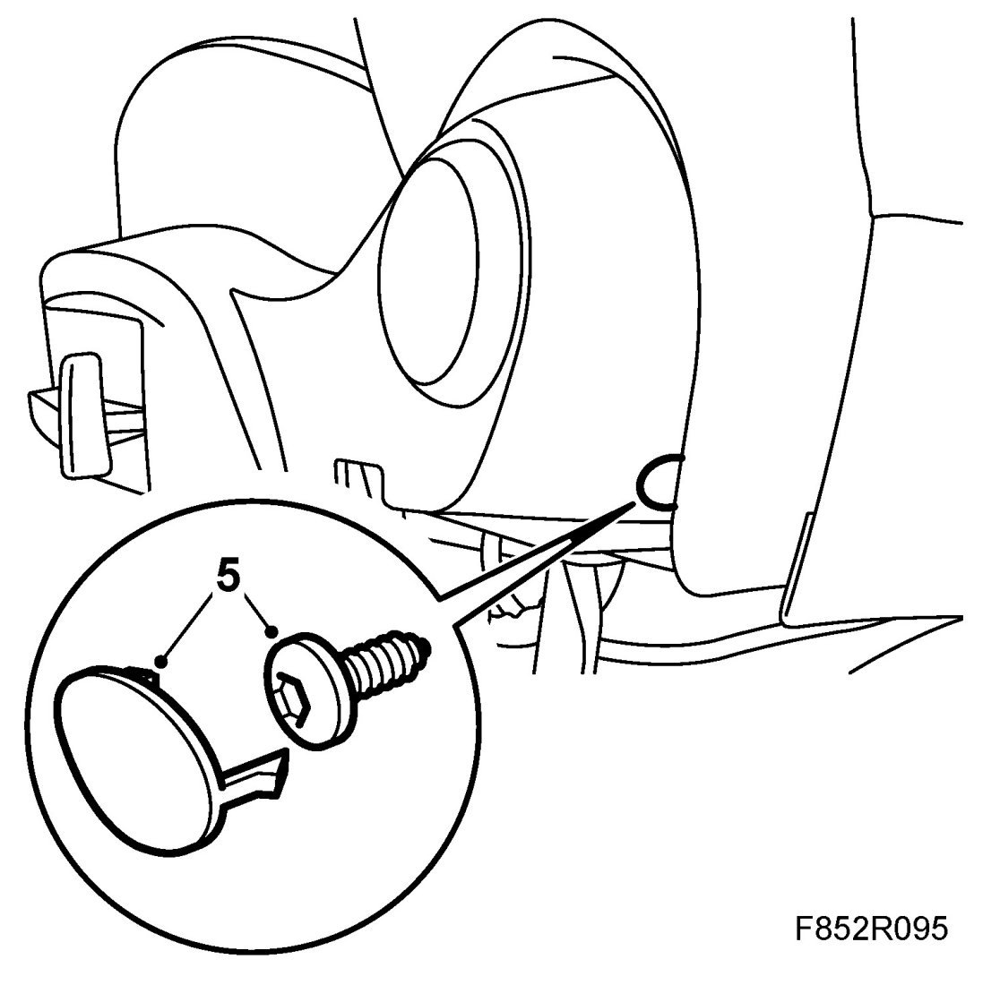
6. Place the seat so that that the bottom is easily accessible.
7. Remove the seat upholstery strips at the front and on the sides.
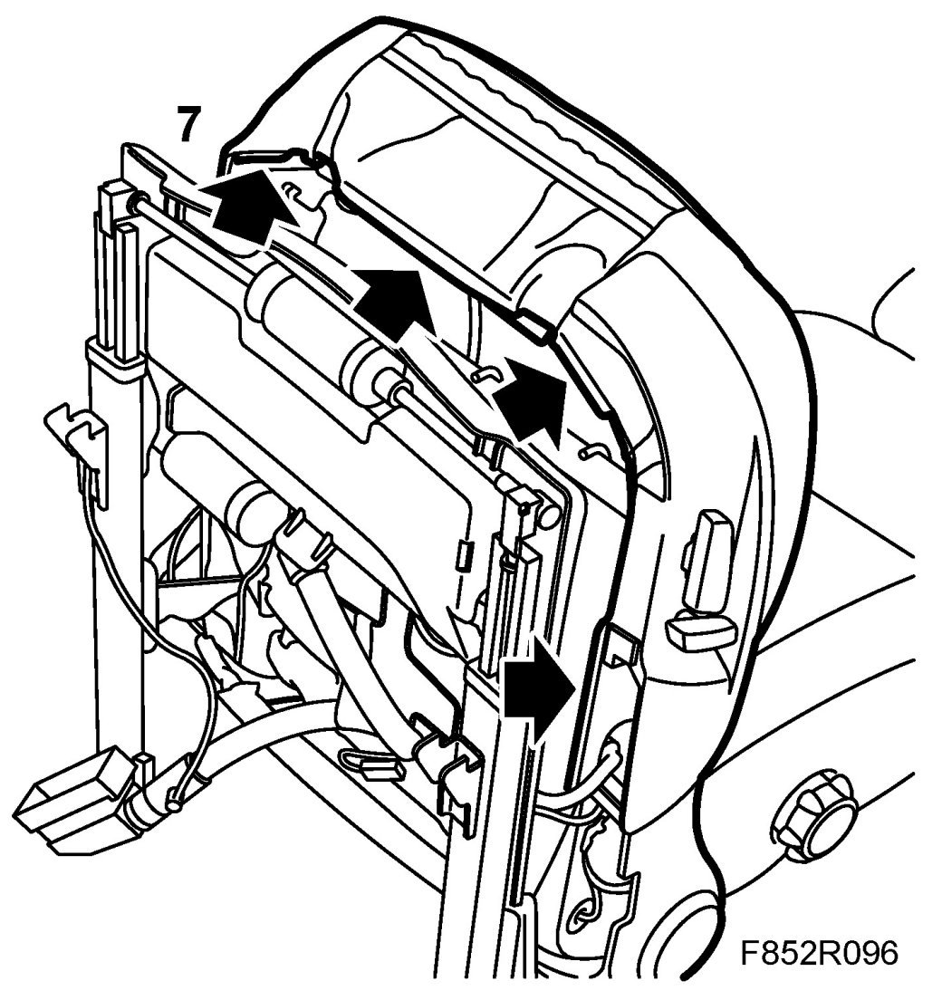
8. Remove the seat upholstery hooks.
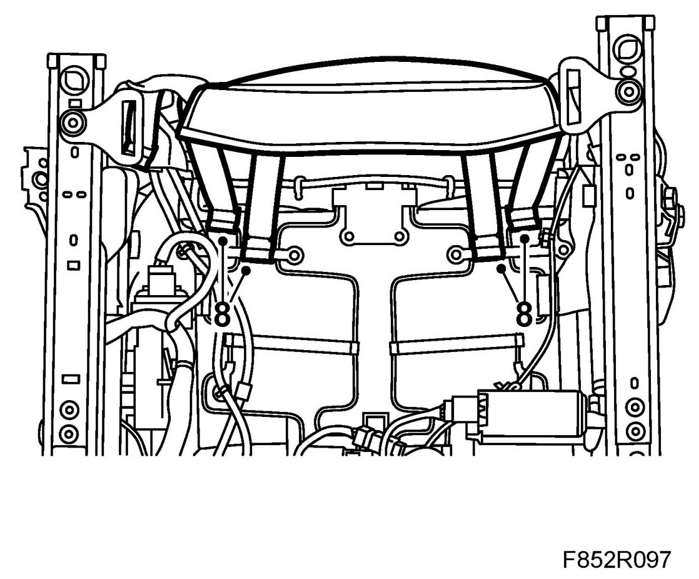
9. Remove the backrest upholstery hooks.
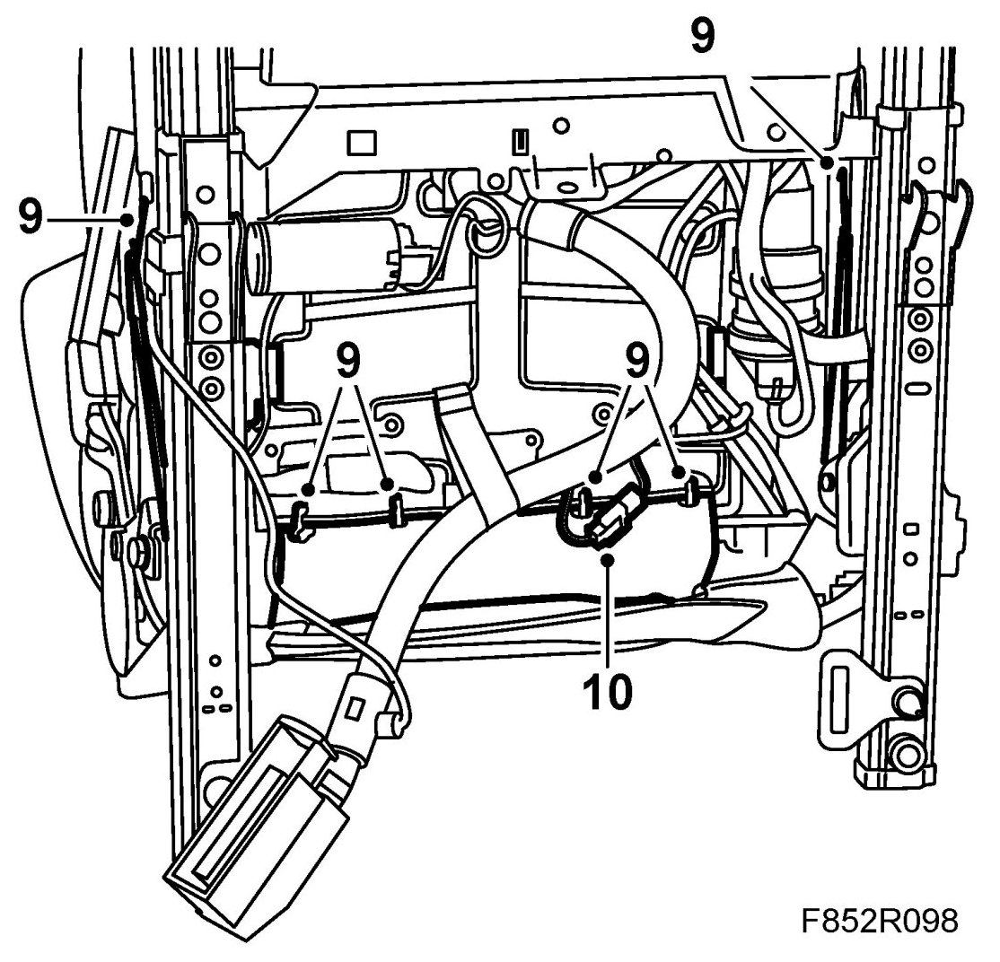
10. Remove the connector from the seat heating pad.
11. Carefully lift up the seat cushion so that the side panel clips are accessible.
12. Remove the front R-clip from the side panel.
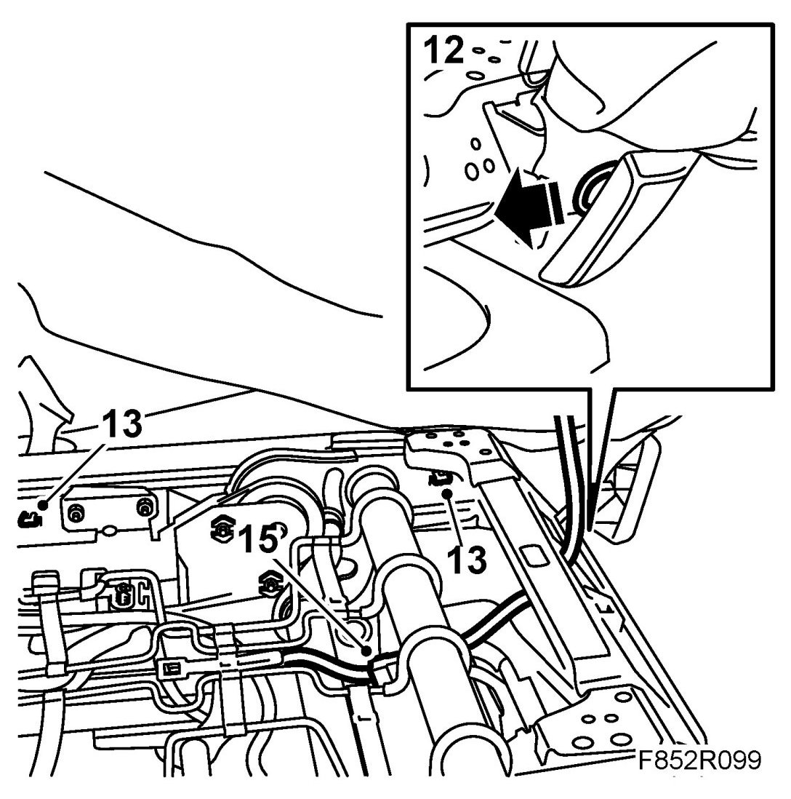
13. Pinch together the side panel clips with a suitable tool so that the side panel can be released.
14. Remove the side panel by first undoing it from its front mounting and then bending it back.
15. Remove the connector from the loaded seat cushion sensor.
Fitting
1. Plug in the connector to the loaded seat cushion sensor.
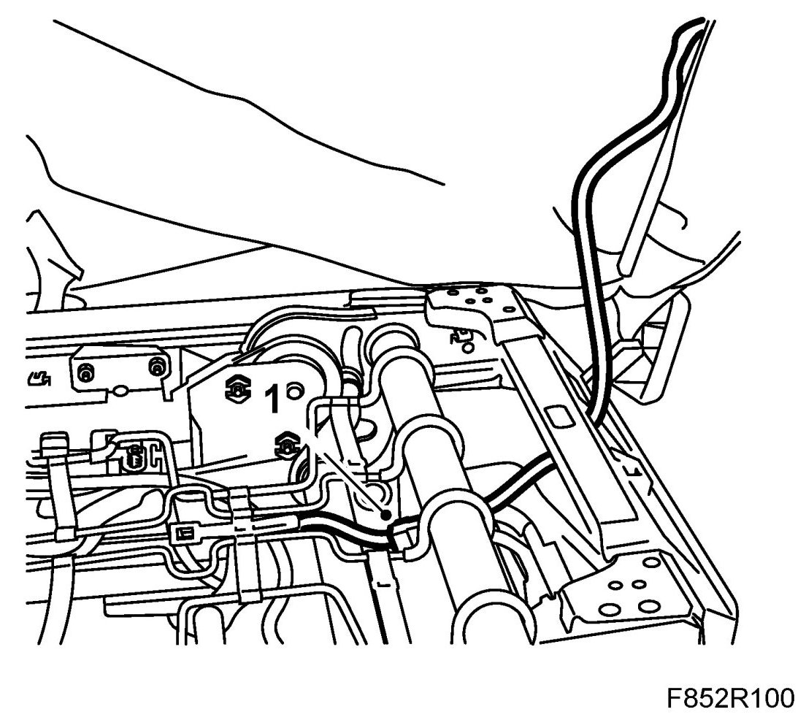
2. Put in place the seat cushion.
3. Plug in the connector to the seat heating pad.
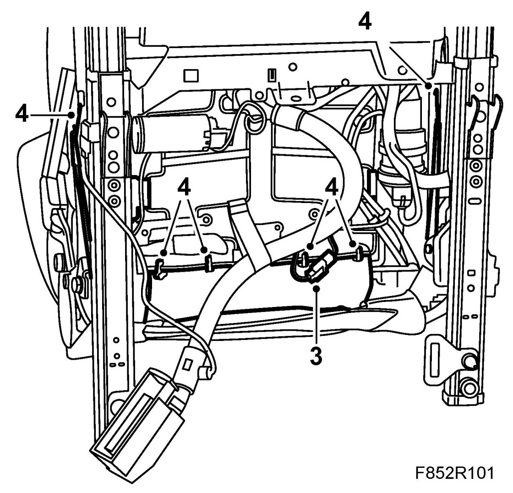
4. Fit the seat upholstery hooks.
5. Fit the backrest upholstery hooks.
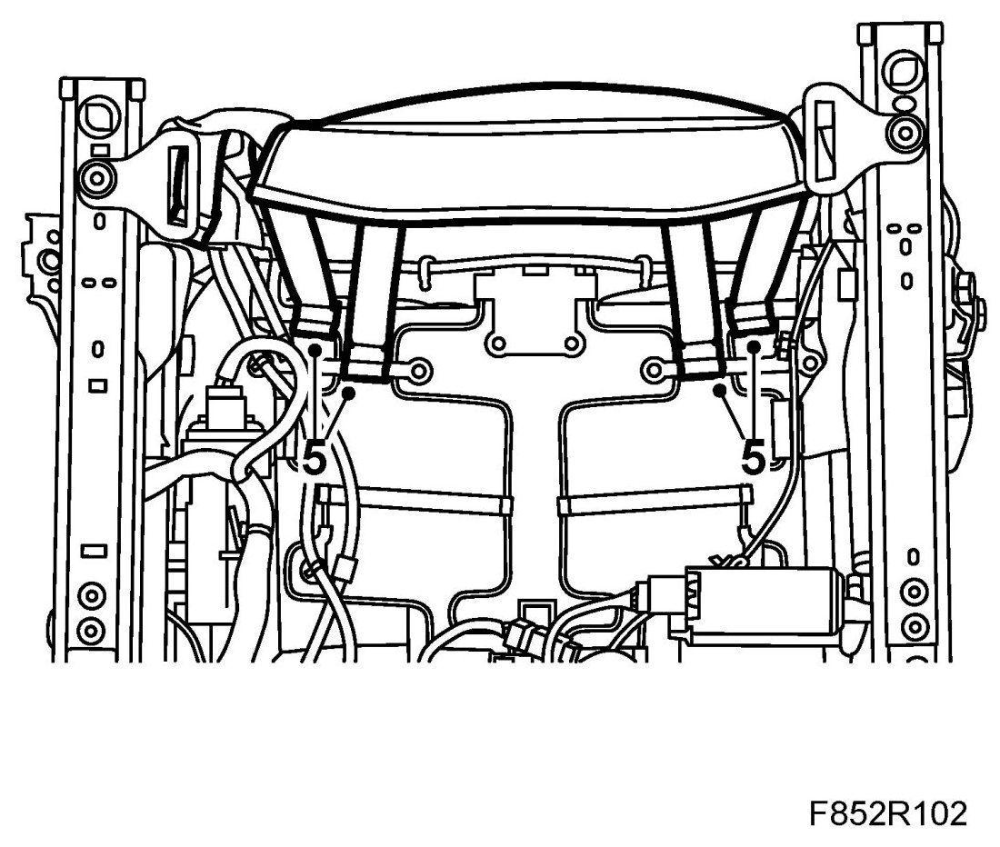
6. Fit the seat upholstery strips at the front and on the sides.
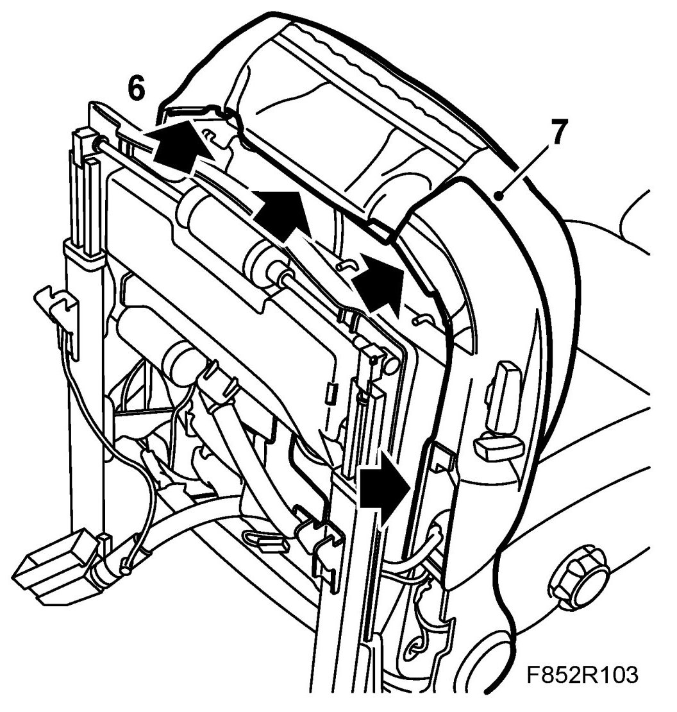
7. Fit the side panel starting at the front edge.
8. Fit the side panel rear bolt and protective cover.
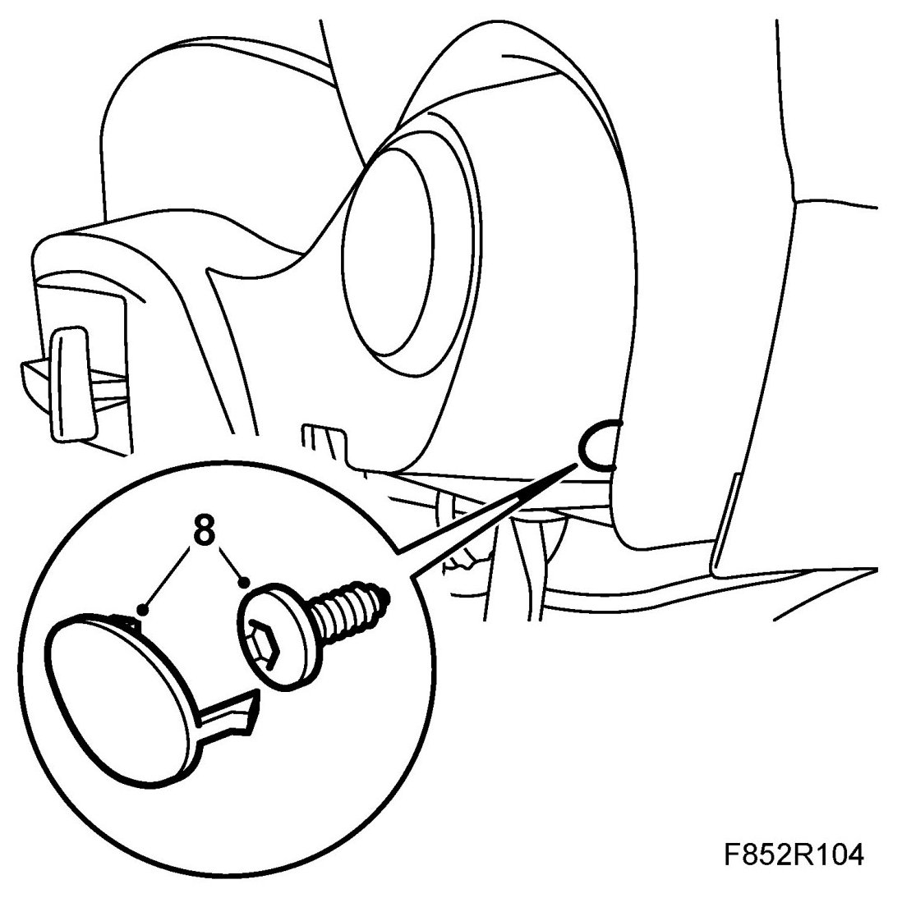
9. Fit the front R-clip to the side panel.
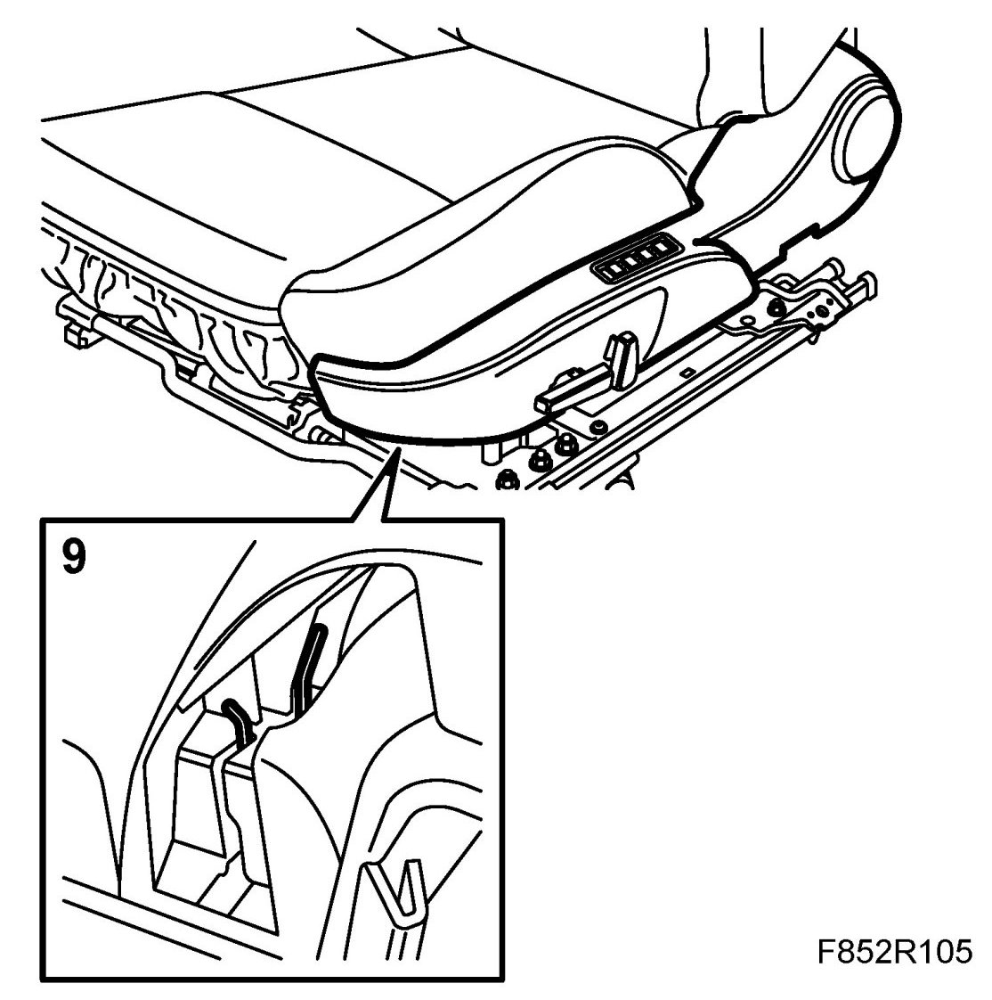
10. Fit the front seat.
11. Turn the ignition key to ON and make sure the airbag warning lamp goes out after 4 seconds. If the airbag warning lamp does not go out, carry out the following procedure to locate the fault.
12. Turn on the ignition and check the airbag system and control module with the diagnostic tool as follows:
Connect the diagnostic tool to the data link connector under the dashboard.
Delete any fault codes.
Turn off the ignition and turn it on again. Wait for at least 1 minute with the ignition on.
Check if any fault codes are displayed:
If a fault code is displayed:
Carry out fault diagnosis as instructed for each respective diagnostic trouble code.
If a fault code is not displayed:
Disconnect the diagnostic tool.